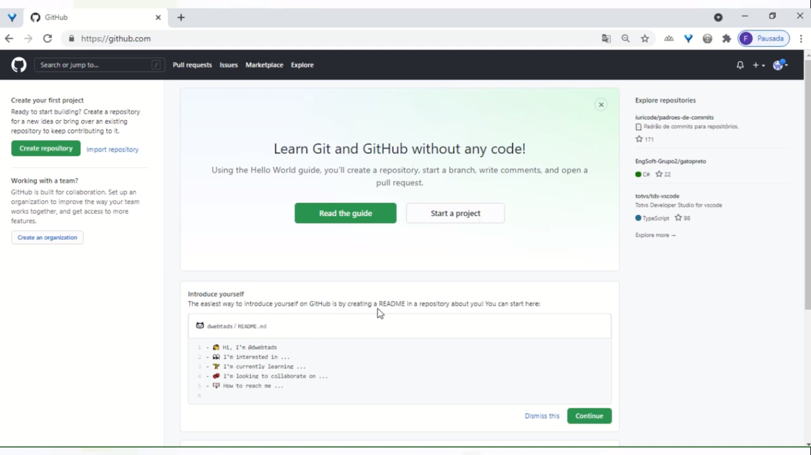
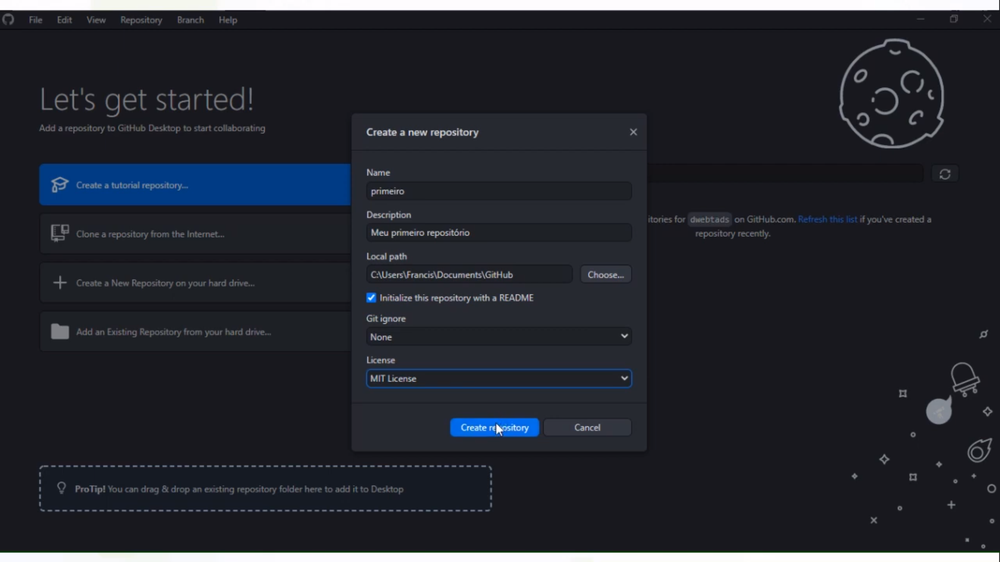

É um sistema que tem por objetivo realizar o controle de versões de um código ou documento
É possível gerenciar as versões de um código ou documento realizadas por um desenvolvedor ou equipe de desenvolvedores
Ao longo do processo de desenvolvimento de um software, várias alterações são feitas no projeto, seja para implementar melhorias e funcionalidades, seja para corrigir bugs e melhorar a experiência do usuário.
O controle de versão consiste basicamente em um sistema que permite registrar alterações feitas no desenvolvimento de um software.
É a partir dele que toda a equipe envolvida no projeto tem acesso ao histórico das versões anteriores do software, podendo recuperar uma versão específica ou compreender quais mudanças foram feitas por outros colaboradores.
Em outras palavras, é uma forma de ter um controle rigoroso sobre lançamentos de novidades do software e melhorias implementadas.
O funcionamento do controle de versão ocorre da seguinte forma: os arquivos do projeto são mantidos em um repositório, salvando as diferentes versões do software.
Por exemplo, uma equipe esteja desenvolvendo um aplicativo para smartphones. Nesse caso, cada membro pode acessar o servidor, obter a versão mais recente do projeto e trabalhar nela.
Quando sua etapa de trabalho é concluída, ele armazena um novo arquivo no repositório, para que os outros profissionais tenham acesso às alterações e possam dar continuidade ao desenvolvimento do software, tendo em mãos todas as informações das quais necessitam.
O controle de versão pode ocorrer em dois modelos: centralizado ou distribuído. De uma forma breve, os sistemas funcionam assim:

É um software livre de versionamento que surgiu par o desenvolvimento do Kernel do Linux, foi projetado e desenvolvido por Linus Torvalds em 2005.
Cada diretório de trabalho do Git é repositório com um histórioco completo e habilidade total de acompanhamento das revisões, não dependente de acesso a uma rede ou a um servidor central
Para o download apertar aqui

Uma plataforma de hospedagem de código-fonte e arquivos com controle de versão.
Surgiu em 2008 e foi adquirido em 2018 pela Microsoft po US$7,5 bilhões.
Para o acessar apertar aqui

É a plataforma que ira juntar o Git com o GitHub.
Junta também o Git com a plataforma que você desenvolve seu site, pode ser Visual Studio Code, por exemplo.
Paradownload do Visual Studio Code, clicar aqui
Para o download do Desktop GitHub apertar aqui
Após instalar o Git no seu computador, dê dois cliques no instalador e siga esse passo a passo:
No campo "Choosing te default editor used by Git" você deve selecionar a plataforma, nesse caso o Visual Studio Code.
Primeiro antes de tudo, você deve se cadastrar no GitHub e irá aparecer essa tela no site após se cadastrar:
Depois de efetuar seu login e terminar a instalação do Desktop GitHub, você ira logar na plataforma com o mesmo usuário e senha cadastrado no site GitHub e a tela incial do aplicativo irá ser essa:
Onde você apertará em "CREATE A NEW REPOSITORY" para começar um repositório novo. E a tela será essa:
"Name" será o nome de seu repositório, "Description" será a descrição dele, "Local Path" será onde ele ficará armazenado em seu computador, ele cria essa pasta junto com a instalação do aplicativo, é sempre bom selecionar o "Initialize this repository with a README" que irá inicializar seu repositório com um README e no "License" se você quer deixar privado selecione a opção "none", que ninguém poderá ver, ja se você quer deixar seu repositório público, pode selecionar qualquer outra licença. Para finalizar, aperte em "Create Repository"